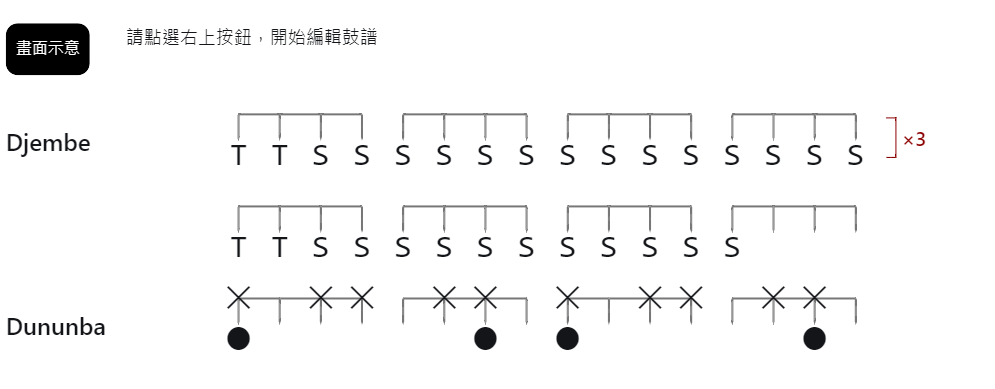
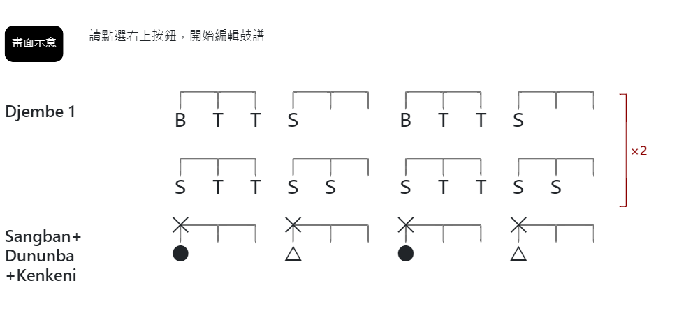

About
預覽
to 3Dum
+ 段落註解
+ Djembe
+ Dum-Dum
完成編輯，匯出
4/4 拍
3/4 拍
4/4 拍
3/4 拍
匯入編輯資料
儲存編輯資料
{{title==='' ? 'Djembe 鼓譜' : title}}
取消
確定修改
{{item.title}}
{{item.note}}
{{item.title}}
{{ item.preBaz==='-' ? ' ' : item.preBaz }}
{{ i==='-' ? ' ' : i }}
×{{item.repeat}}
{{ item.preBeat==='-' ? ' ' : item.preBeat}}
{{ i==='-' ? ' ' : i }}
{{ item.preBeat==='-' ? ' ' : item.preBeat }}
{{ i==='-' ? ' ' : i }}
上移
下移
編輯
刪除

新增標註
修改標註
新增 {{tempDrum.type}} 小節
修改 {{tempDrum.type}} 小節
段落標註
段落標註快速輸入
基本節奏
連拍
Break
Call
說明文字 ( 可留白 )
小節標題
標題快速輸入
Djembe
Djembe 1
Djembe 2
Sangban
Dununba
Kenkeni
All Same
{{tempDrum.type}} 鼓譜 (請使用按鈕編輯)
加上前半拍
本節需重複
與下行一起重複
與上行一起重複
{{ tempDrum.preBaz ==='' ? ' ' : tempDrum.preBaz }}
{{i}}
×{{tempDrum.repeat}}
{{ tempDrum.preBeat === '' ? ' ' : tempDrum.preBeat }}
{{i}}
新增按鈕 ( - 號代表空拍)
B
T
S
-
ᵀT
TT
SS
❲SS❳
M
ˢS
ᴮT
刪除按鈕
/ 重複次數增減
←
清空
✚
⚊
編輯按鈕 ( - 號代表空拍)
✕
-
←
⬤
△
☆
-
←
全部清空
/ 重複次數增減
清空
✚
⚊
取消
確定新增
確定修改
取消
匯出圖片
匯出圖片
匯出PDF
欲匯出PDF，請在列印視窗的「目的地」選擇「另存成PDF」
請點選圖片儲存
×
...